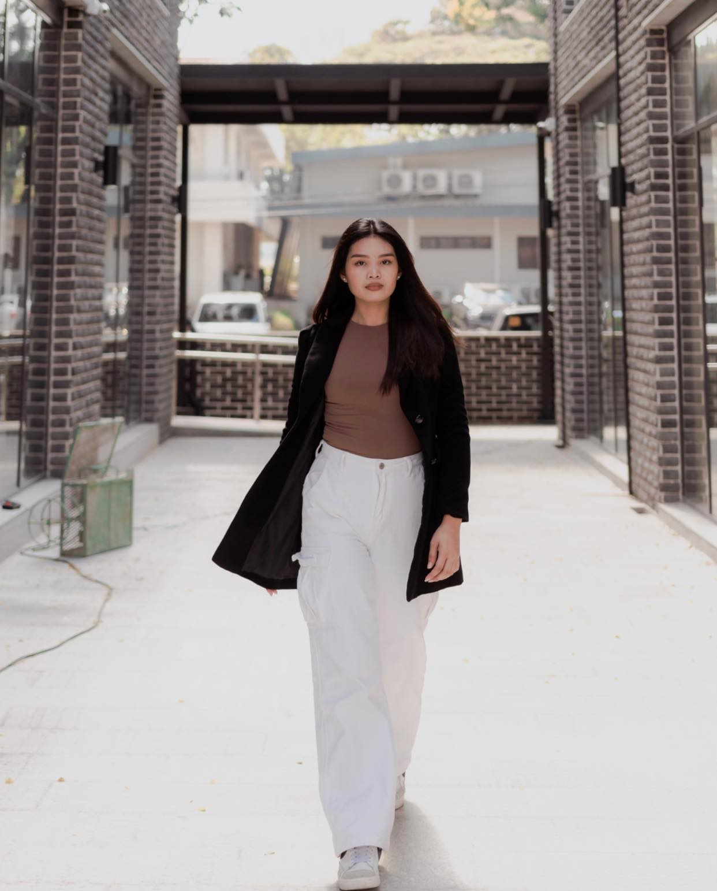

established since 2019 and has been producing items that develops thru up cycling pieces
MARTIN BASICS
"home of sustainable basics"
Martin Basics pants include an elasticized waistline,a tapered ankle,
and a relaxed fit.
something that promotes sustainable fashion
without breaking the bag.
These track pants are ideal
for wearing on the track or during the day.

Ellaine Joy Martin
is a one woman labor business, where everything is done by the owner.
A 19 years old business minded woman started her business since
pandemic started.
According to her "Indeed, ukay is not for the weak, napakaraming trial
and errors, sleepless nights, doubts, and gloomy days. Hindi araw-araw
pasko at masagana. But as long as you feed your mind with the sole
reason why you started, you will definitely have the motivation to keep going."
is a one woman labor business, where everything is done by the owner.
A 19 years old business minded woman started her business since
pandemic started.
According to her "Indeed, ukay is not for the weak, napakaraming trial
and errors, sleepless nights, doubts, and gloomy days. Hindi araw-araw
pasko at masagana. But as long as you feed your mind with the sole
reason why you started, you will definitely have the motivation to keep going."